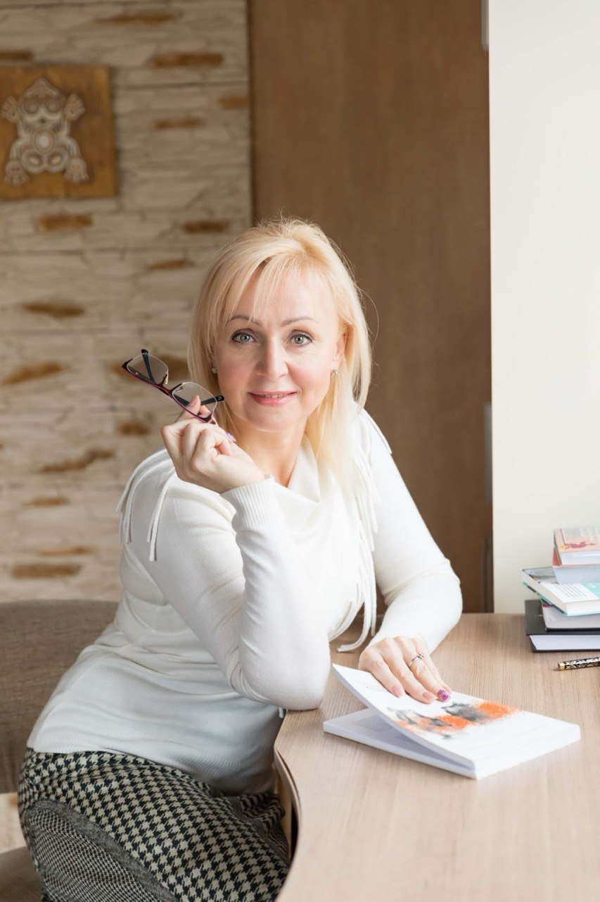

Порошинська Наталія — Спеціаліст студії

Спеціалізація: Інформація уточнюється
Про себе: Дані про спеціаліста готуються до публікації.
Прийом у студії (Буча): Графік узгоджується.
🎓 Переглянути дипломи та сертифікати
- Документи готуються до завантаження